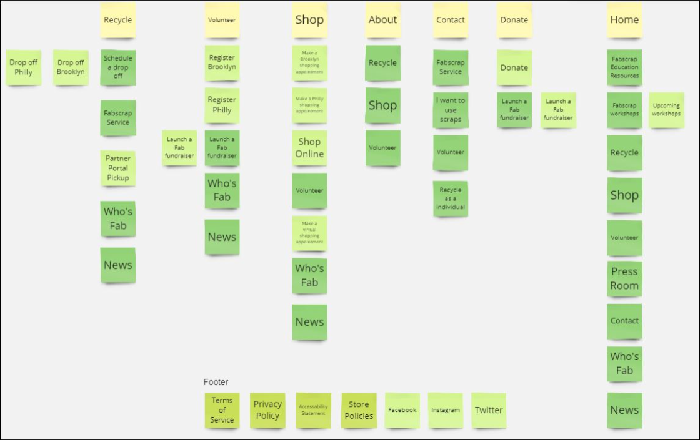

Ux UI case study
Fabscrap
Unleash the Power of Recycling


Project Overview
Fabscrap is on a mission to halt textile waste. Through workshops, training, and collaboration with designers, crafters, and volunteers, our website transforms unused fabric into something valuable, fostering a more eco-friendly and community-driven approach to fashion and entertainment
Problem Statement
users struggle to easily and intuitively navigate through the website, hindering their ability to understand the recycling process, locate relevant information, and engage with the platform efficiently

Project Goal
The primary goal is to inform the redesign of FabScrap Recycle, ensuring it provides a seamless and empowering experience for users engaged in sustainable fashion practices. We aim to identify user pain points, preferences, and opportunities for improvement. Gather insights on their motivations and expectations regarding textile recycling
Design thinking process

User research User interview entrant analysis

User persona User journey map Goal statement Empathy map

Brain storming Cart sorting user flow

wireframe Visual design prototype

Usability test Improvement
Project Timeline
Ux Design
Research
Interview, empathy map, User journey map
Problem statement Gole statement
Competitive Analysis Informarion Architecture
Ui Design
Wire frames
Visual Design &Prototype
Usability test phase
Empatize Phaze , Understanding the problems
UX Research Plan
Methodology:
We will conduct a series of user interviews and surveys to gather qualitative and quantitative data. Five user interviews lasting approximately twenty minutes each will be conducted over Zoom, focusing on understanding user behaviors and preferences. Simultaneously, surveys using Google Forms will be distributed to a broader audience to identify common patterns and gather quantitative insights
Participants
Ideal participants are individuals involved in the fashion industry with a specific interest in sustainable practices, including designers, brands, and individuals committed to reducing environmental impact through textile recycling. Participants should have some familiarity with FabScrap or textile recycling initiatives. Additionally, we welcome those who want to contribute to environmental conservation and play a role in preserving nature

Script
What is your age?
What do you do for a living?
Are you currently single or in a relationship?
Can you tell us a bit about yourself and your connection to the fashion industry, particularly in the context of sustainable practices?
2. What does sustainable fashion mean to you, and how would you describe its significance in today's fashion landscape?
3. How do you perceive the role of consumers in driving the demand for sustainable fashion? What influences their choices?
4. In your opinion, how could the FabScrap Recycle platform be improved to better meet the needs of users like yourself?
5. What features of the platform do you find most valuable or beneficial for sustainable fashion practices?
6. How do you see technology and innovation playing a role in advancing sustainability within the fashion industry?
7. After browsing the website Has FabScrap or sustainable practices influenced your decision-making in purchasing or designing fashion items outside of the recycling context?
8. If you could recommend one improvement or addition to the FabScrap Recycle platform, what would it be?
9. Are there any barriers or concerns that would prevent you from actively using the FabScrap Recycle platform?
Existing Website Flow Testing:
Task:
Try to purchase a fabric material from the website
Try to find what type of recycling Fabscrap accepts for recycling as an individual
key-insight
1. Redesign navigation for Recycling Service
User Feedback: I had trouble finding where to start the recycling process. Usability Test Observation: Users frequently clicked on non-intuitive menu items, such as 'About Us,' expecting to find recycling instructions.
2. Information gap on sustainable fabrics & recycling processing
User Feedback: "Can't find needed information for recycling" sability Test Observation: Users hesitated at the recycling confirmation step, indicating a lack of understanding of the subsequent steps and the environmental impact.
3. Lack of Clear Calls-to-Action (CTAs):
User Feedback: "Hard to make donation on this website", "Can't find where to start the recycling process" Usability Test Observation: Users missed key CTAs, such as 'Start Recycling Now,' 'Donate Now', resulting in a missed opportunity for user engagement.
4. Mobile Usability Concerns:
User Feedback: "Some buttons and font were too small, and the layout didn't adapt well to my screen." Usability Test Observation: Users encountered difficulties interacting with certain elements on the mobile version, leading to frustration.
5. Tab Overload and Workflow Disruptions
User Feedback: "Opened too many new tabs". "The shopping online options is "hidden" Increased cognitive load and a less seamless browsing experience, also disrupt users' intended workflow and unable to achieve tasks.
Behavioral Demographic
- Occupation: Tech Consultant
- Name: Marry
- Age: 32
- Relationship Status: Married
- Hobby: Textile bag recycling
Goal & Needs
- Wants to live a more sustainable life.
- Needs to do her part and protect the environment
- Wants to promote sustainability wherever she can.
- Wants to raise awareness for textile recycling..
Behavioral and Habits
- Loves shopping sustainable and supports the slow fashion movement..
- Is an active member in rework textile groups on Facebook.
- Social media advocate for textile recycling
Paint point and Frustrations
- Struggles to find sustainable fashion that matches her style.
- Balancing sustainability with personal and professional commitments.
- Difficulty discovering comprehensive resources for a sustainable lifestyle
Empathy Map
Say
Unfamiliar with sustainable fabric needs to see the positive impact on both the environment and the industry. website should explain about sustainable fabric
Think
Volunteering process could be more straightforward
Does
Separates waste
Pain point
Struggles to register for a recycle campaign Finds it difficult to get involved with the website
Goals
Collaborates with recycling campaign
Feeles
Recycle feature is great
Cart Sorting
Architecture